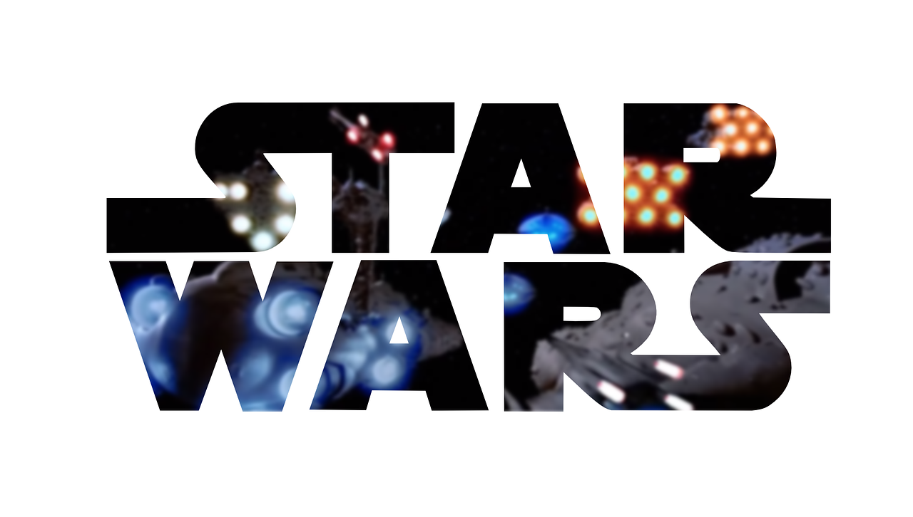

  <div class="navbar-fixed" id="navbar">
    
    <nav class="nav blue-grey darken-2">
      <div class="nav-wrapper">
        <!-- <a href="" class="brand-logo"></a> -->
        <a href="" data-target="mobile-demo" class="sidenav-trigger"><i class="material-icons">menu</i></a>
        <ul v-host-listener:click="showHidePathBack()" class="right hide-on-med-and-down">
          <li><router-link class="checkback" to="/" >Home</router-link></li>
          <li><router-link class="checkback" to="/people" >People</router-link></li>
          <li><router-link class="checkback" to="/starships" >Ships</router-link></li>
          <li><router-link class="checkback" to="/planets" >Planets</router-link></li>
        </ul>
      </div>
    </nav>

    <div v-if="showBack" id="container_goback" ref="container_goback">
      <a @click="goBack()" id="goback" class="btn-floating black">
        <i class="fas fa-arrow-circle-left"></i>
      </a>
    </div>

  </div>

  <ul v-host-listener:click="showHidePathBack()" class="sidenav sidenav-close" id="mobile-demo">
    <li><router-link class="checkback" to="/">Home</router-link></li>
    <li><router-link class="checkback" to="/people">People</router-link></li>
    <li><router-link class="checkback" to="/starships">Ships</router-link></li>
    <li><router-link class="checkback" to="/planets">Planets</router-link></li>
  </ul>

  <div id="status_go_back" @click="showHidePathBack()" hidden></div>
